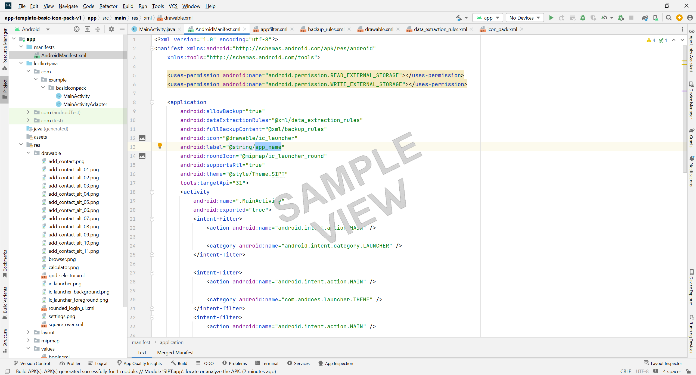
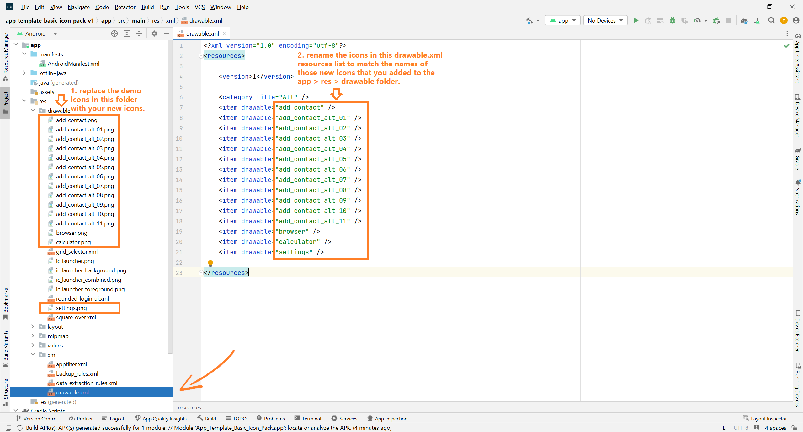
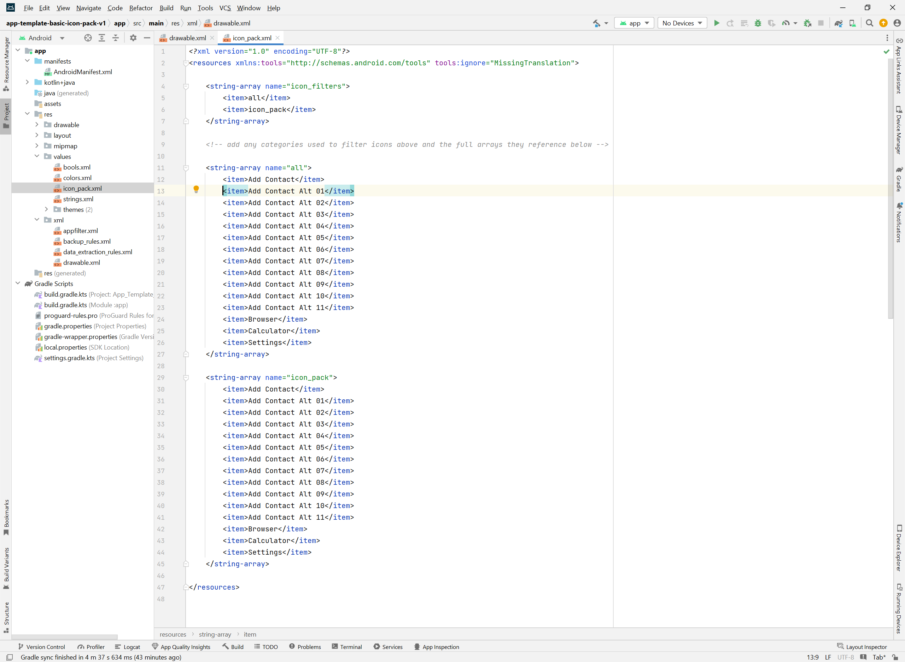
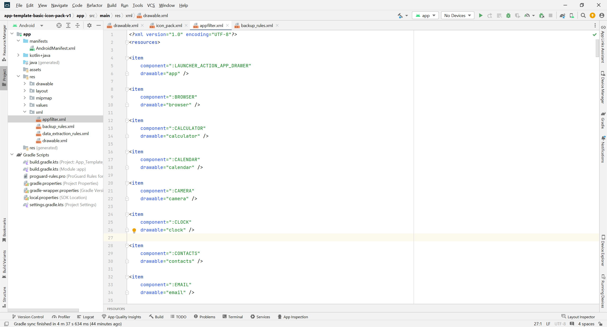

{kind=link}
A simple free android app template for a basic icon pack (use it with Andoid Studio to make or edit an icon pack (an icon pack is stored inside an .apk wrapper)).
{kind=link}
{kind=link}
Files available to download:
- Here's the finished .apk made by using this template if you just want to try it out (app-template-basic-icon-pack-v1-demo.zip):
- Here are all the Android Studio files inside a project folder (app-template-basic-icon-pack-v1.zip) - unzip the download and then drag the whole folder onto your Android Studio desktop icon to open it (or select the folder from 'File > Open' menu within an open instance of Android Studio):
To use:
Open the template in Android Studio, add your new icons in the drawable folder, update the details of the new icons to the drawable.xml, icon_pack.xml and appfilter.xml files and then build the icon pack (apk).
A longer explanation for how to use the template:
- If you haven't already got Android Studio, install it on your computer - Link here: developer.android.com (I used the Hedgehog version 2023.1.1 to create the template).
- Download the project files 'app-template-basic-icon-pack-v1.zip' to your computer, unzip it and then drag the whole folder onto your Android Studio desktop icon to open it (or select the folder from 'File > Open' menu within an open instance of Android Studio).
- For first-timers probably stick to the project name as it is because changing the name is a bit convoluted depending on which version you are using but if you want to change it there is a helpful guide here.
- After everything updates, imports, synchronises and opens (this may take quite a few minutes), next try Build > BuildBundle(s)/APK(s) > Build APK(s) from the top menu to build the app from the project files.
- If Android Studio builds the template ok without any problems move on to 'Adding your icons and personalising your new app' in next section.
- Just a note about Android Studio - please be aware that it is very large and very slow and is hardly ever compatable with any older projects or examples that you are likely to download and try to use so you may have to persevere for a while to get anything to work - usually by repeatedly attempting to build the apk and then having to correct any errors listed in the build log (fix these errors by searching for answers on 'stack overflow' etc. or by updating the various Android Studio program elements and trying again).
- If you feel confident you can either rename the project (look for online tutorial if you are not sure how to do this) or start a new project using the built-in template 'Empty Views Activity' with the new name that you want and then copy all the files across from the downloaded template to this new project (this is not straightforward and takes a bit of time but it is a good place to learn the layout of all the different types of files inside an an app and where they are located - in general systematically copy one file at a time, moving the body of the code for each file from the downloaded template to the corresponding place in the new project (but keep the new projects package id's) and then copy across and update appropriately all the other associated references such as strings, values, drawables, menus, themes, gradle files etc. into the new project.
- Check the list of imports at the top of each of the Kotlin/java files (you can delete any greyed-out ones that are unused and add any missing imports to this list by right-clicking any red highlighted items in the body of the code and select 'add import' (and then generally choose the top one from list of imports that appears).
- When you eventually have a project that Android Studio builds without any errors you can then use the emulator to test it or you can build the actual app to test on your device by selecting: Build > BuildBundle(s)/APK(s) > Build APK(s), and wait for it to build the .apk (this may take a long time - please wait for the progress bar to complete).
- After it has completed building the apk a dialog box 'Build APK(s)' appears in the bottom right of Android Studio - click on 'locate', then 'debug', then rename the 'app-debug.apk' file to 'test.apk' or whatever other name you want for the .apk file, then copy the .apk to your device to test it there (don't forget to allow apps from unknown sources).
- Also bear in mind what version of Android you are using and is it compatible?
- It may look or work differently on your device than it did in the emulator so you may have to adjust the code for any inconsistencies that become obvious when you test it on your device.
- You can now move on to personalising your app.

Adding your icons and personalising your new app:
- You can now personalise the template by adding your icons and editing other elements of it until you are satisfied with the results and then you can build your apk again - Here's how:
- 1. When using this template all your icons should be stored in the folder: app > res > drawable, look in this folder and you will see where the sample demo icons are stored and put your new icons here in the same place using the same format, you can delete the sample icons but take care to only delete icons that are actually part of the icon pack and not system icons.
- 2. Ammend the resources list in the file: app > res > xml > drawable.xml to include all the names of the new icons that you are adding. This list is used by Nova Launcher and other Launchers to find and install the icons.
- 3. In the file: app > res > values > icon_pack.xml (which is used to list the names and group the icons) update these lists to reflect the names and groups of icons you want your pack to contain. Make sure to include both the two basic groups "all" and "icon_pack" which will usually be identical and should both contain all of the icons in your pack. Note: Both the main "all" and "icon_pack" groups should contain an identical number and listing order of icons that the app > res > xml > drawable.xml file does because they need to correlate with each other to work! (however the icon_pack.xml and drawable.xml items can have different names but must always be in the same order of equally sized lists to match up).
- The string-array "icon_filters" at the top of the icon_pack.xml file contains the references to the different groups, each of which has their own string-array below containing the icons included in each group - update these using the names of your own icons in the same format as the examples.
- You can also add your own extra groups such as 'Games' or 'System' etc. - just add a new string-array for each new group containing just the names of the icons from your pack that you want in those groups - and then add the names of these new groups to the "icon_filters" string-array to reference the groups.
- 4. In the file: app > res > values > appfilter.xml (it’s in here that you tell the launcher which images (icons) from your drawable folder belong to which apps) for simplicity you are probably best advised to leave this file completely as it is and only look through it if you want to see the default names to use when naming your icons or checking to see if your added icons have the same names as those already used for other activities, but if you need to you can add any special information regarding your new icons here.
- 5. Build your app again by selecting: Build > BuildBundle(s)/APK(s) > Build APK(s)



Some general notes on editing your new app in Android Studio:
- If you are renaming anything in Android Studio right-click it and select Refactor > Rename to collectively change all the instances of it and everything linked to it throughout the project.
- Use right-click 'Find Usages' to check what things are connected to and use 'Delete > Safe Delete' before removing things to make sure it is ok to get rid them.
- The best way to start modifying the code is to add snippets of code that you have already tested elsewhere in other projects and you know already work with your version of Android studio.
- In the AndroidManifest.xml you can change the icon that your android app shows by adding a 512x512 pixel icon in .png format to the app > res > drawable folder and updating android:icon="@drawable/name_of_the_icon_you_added_to_drawable_folder_here". Alternatively you can more correctly right-click on the res folder and select New > Image Asset and use the dialog to make a proper full set of icons for the app - use android:icon="@mipmap/ic_launcher" to show these icons.
- Also in the AndroidManifest.xml you can change the name that shows for the app by changing android:label="app_name_you_want_to_show_here".
- Put any images you want to use in your project into the drawable folder and link to them by using "@drawable/name_of_the_image_you_added_to_drawable_folder_here".
- As a general rule in Android Studio try to use reference strings like "@string/text_reference_id_here" to add text to layouts rather than putting your text directly in the layout code (put the actual text you want to use as a string in res > values > strings.xml with a name like the example above "text_reference_id_here" and reference to that).
- For first-timers probably stick to the project name as it is because changing the name is a bit convoluted depending on which version you are using but if you want to change it there is a helpful guide here.
A few things to note about the code:
- I haven't converted to kotlin for this project so it just uses java.
- The app will not be signed so you will have to do that seperately if you wish to distribute it commercially (Look up: How do I sign and publish an Android app?)
- For help on most things regarding Android Studio go to stackoverflow.com and dig through the answers and examples there.
- This app does not contain an inbuilt installer so you will need to use a third party launcher like Nova Launcher or Apex Launcher to install the whole icon pack at once (Pics of Nova Launcher icon pack install and icon edit examples below). You can however select individual icons by selecting (pressing them) in the icon pack and downloading them go your device, then you can individually use them from your download folder to replace the individual icons that you want - press and hold an icon and use edit on most newer device user interfaces to pick a new image/icon and swop the standard ones.
Load the whole icon pack:
{kind=link}
{kind=link}
{kind=link}
{kind=link}
Edit the icons individually:
{kind=link}
{kind=link}
{kind=link}
{kind=link}
Click the link below to visit the github repository that is used to generate this site:
https://github.com/boxbot6/app-template-basic-icon-pack-v1